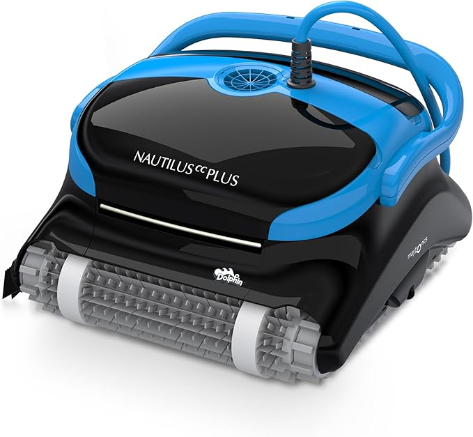

Dolphin Nautilus CC Plus
Especificaciones técnicas
| Tipo | Con cable (eléctrico) |
| Piscina máxima | 12 metros / 40 ft |
| Superficies | Fondo y paredes |
| Filtración | Ultrafina (50 micras) |
| Cable | 18 m con swivel anti-enredo |
| Ciclo limpieza | 2,5 horas |
| Garantía | 2,5 años |
| Peso | 7,9 kg |
Ventajas
- Filtros ultrafinos de 50 micras — el más completo de su categoría
- No necesita batería — funciona de forma continua
- Cable anti-enredo con swivel giratorio
- Garantía de 2,5 años — la más larga de su rango
- Miles de valoraciones positivas en Amazon España
Inconvenientes
- No limpia la línea de flotación
- Requiere enchufe cerca de la piscina
- Precio elevado respecto a robots de batería
El Dolphin Nautilus CC Plus es el robot más vendido de Amazon España por una razón sencilla: funciona. Sin preocuparte de la batería y con una filtración ultrafina que pocos rivales igualan, es la opción ideal para quien quiere un robot fiable y duradero sin complicaciones. Si tienes una piscina enterrada de hasta 12 metros y un enchufe cerca, es nuestra primera elección.

Aiper Scuba S1 (2025)
Especificaciones técnicas
| Tipo | Inalámbrico (batería) |
| Piscina máxima | 150 m² |
| Superficies | Fondo, paredes y flotación |
| Filtración | Ultrafina (3 micras) |
| Autonomía batería | 180 minutos |
| Control | App móvil + OTA updates |
| Carga | ~4 horas |
| Peso | 5,2 kg |
Ventajas
- Sin cable — total libertad de movimiento
- Limpia paredes y línea de flotación
- Filtración de 3 micras — extraordinariamente fina
- Control por app con actualizaciones OTA
- 180 minutos de autonomía — suficiente para 150 m²
Inconvenientes
- Batería se degrada con el tiempo
- Tiempo de carga de ~4 horas
- Más caro que otros robots de batería similares
El Aiper Scuba S1 es el robot inalámbrico más completo por debajo de 400 €. Su filtración de 3 micras es mejor que muchos robots con cable, y la app hace que programarlo sea muy sencillo. Si prefieres la comodidad de no tener cables y tu piscina es de hasta 150 m², es una elección excelente.

WYBOT C1
Especificaciones técnicas
| Tipo | Inalámbrico (batería) |
| Piscina máxima | 150 m² |
| Superficies | Fondo y paredes |
| Filtración | 180 micras |
| Autonomía | 150 minutos |
| Planificación | Ruta inteligente |
| Peso | 4,8 kg |
| Garantía | 1 año |
Ventajas
- Precio muy competitivo por debajo de 250 €
- Sube por las paredes — raro a este precio
- Planificación inteligente de rutas
- Sin cable — fácil de manejar
- Ligero (4,8 kg) y fácil de sacar del agua
Inconvenientes
- Filtración de 180 micras (menos fina que rivales)
- Sin app de control
- No limpia línea de flotación
- Garantía de solo 1 año
Si tu presupuesto es ajustado y quieres un robot inalámbrico que suba por las paredes, el WYBOT C1 es una ganga a menos de 250 €. No es el más sofisticado, pero limpia bien el fondo y las paredes de piscinas medianas sin complicaciones ni cables. Perfecto para un primer robot o para una piscina de uso estacional.

Beatbot AquaSense 2
Especificaciones técnicas
| Tipo | Inalámbrico (batería) |
| Piscina máxima | 200 m² |
| Superficies | Fondo, paredes y flotación |
| Filtración | Alta eficiencia doble capa |
| Autonomía | 120 minutos |
| Estacionamiento | Automático en superficie |
| Especial | Doble pasada línea flotación |
| Garantía | 2 años |
Ventajas
- Estacionamiento automático en superficie al terminar
- Doble pasada en línea de flotación — único en su clase
- Apto para piscinas muy grandes (200 m²)
- Diseño premium y materiales de alta calidad
- Garantía de 2 años
Inconvenientes
- Precio elevado (misma gama que Dolphin CC Plus)
- 120 min de autonomía — menor que el Aiper S1
- Marca menos conocida — red de servicio técnico limitada
El Beatbot AquaSense 2 es el robot de batería más sofisticado de esta selección. Su estacionamiento automático en superficie y la doble pasada en la línea de flotación son características únicas. Si tienes una piscina grande y buscas la máxima comodidad en un robot inalámbrico, merece cada euro.

iGarden K60 (2026)
Especificaciones técnicas
| Tipo | Inalámbrico (batería) |
| Piscina máxima | 180 m² |
| Superficies | Fondo, paredes y flotación |
| Filtración | Doble capa |
| Autonomía | 360 minutos (6 horas) |
| Temporizador | Sí (IA) |
| Pantalla | Táctil |
| Compatibilidad | Enterradas y desmontables |
Ventajas
- 6 horas de autonomía — la mayor de esta selección
- Pantalla táctil integrada
- Temporizador con IA para programar limpiezas
- Compatible con piscinas enterradas y desmontables
- Navegación inteligente con sensores
Inconvenientes
- Marca con menos historial que Dolphin o Aiper
- Tiempo de carga prolongado por la gran batería
- Disponibilidad variable en Amazon España
El iGarden K60 destaca por algo que ningún rival iguala: 6 horas de autonomía. Ideal para piscinas grandes que necesitan varias horas de limpieza continua sin necesidad de recargar. Si tienes una piscina desmontable de cierto tamaño o simplemente quieres olvidarte de la batería, es la mejor opción inalámbrica.